Gallery
 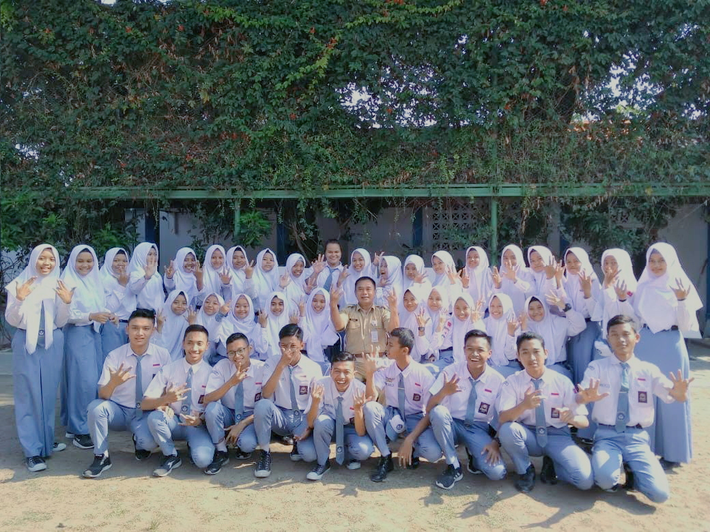
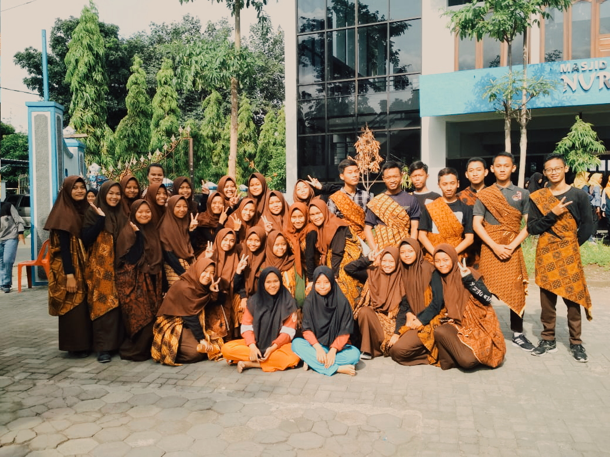
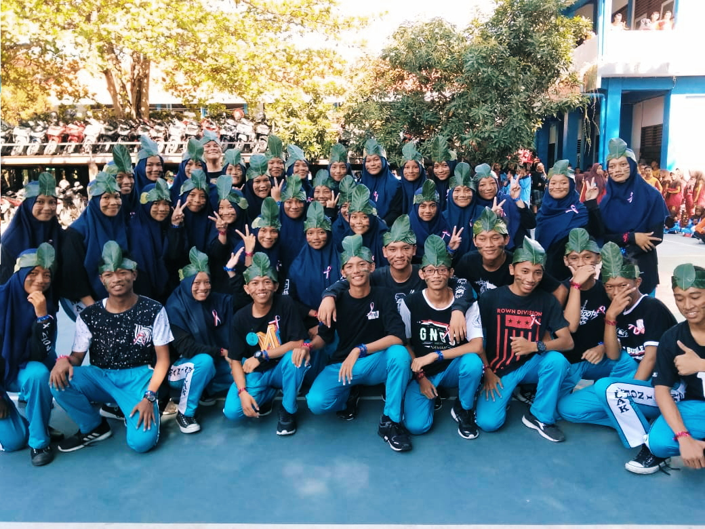
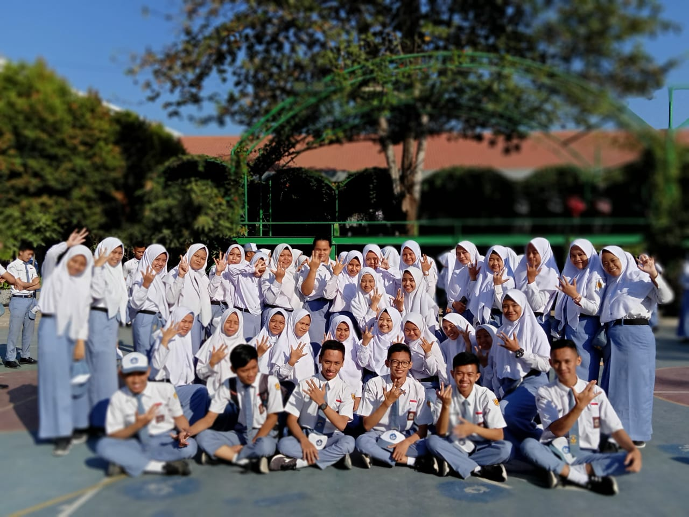
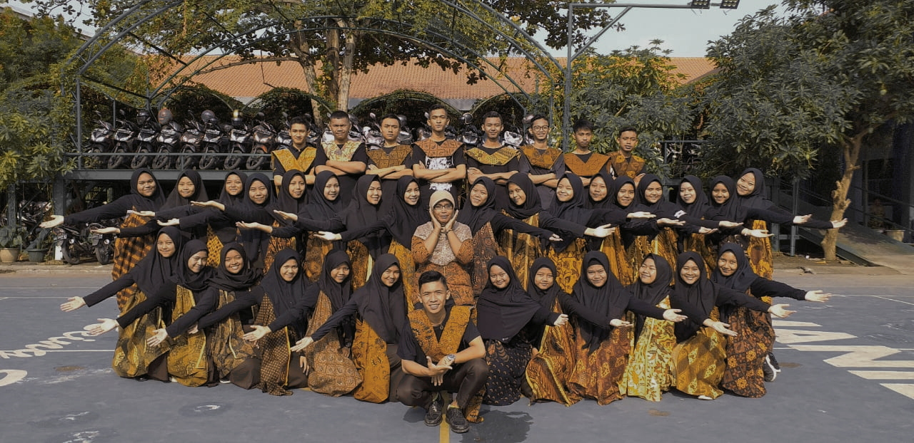
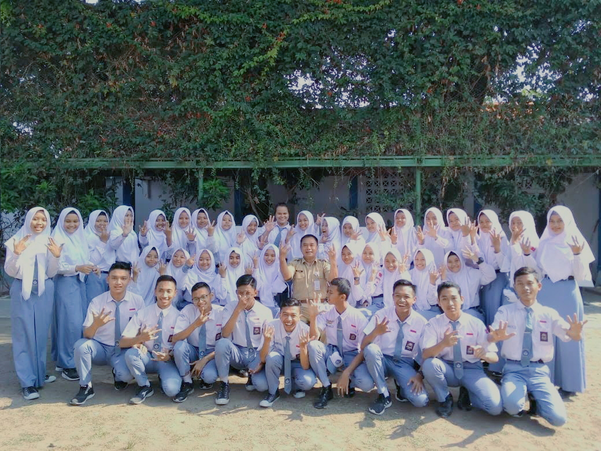
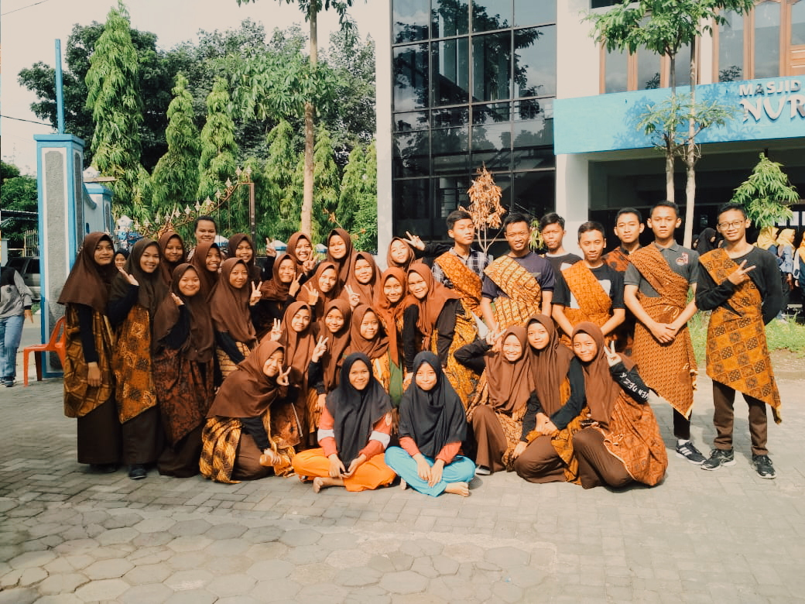
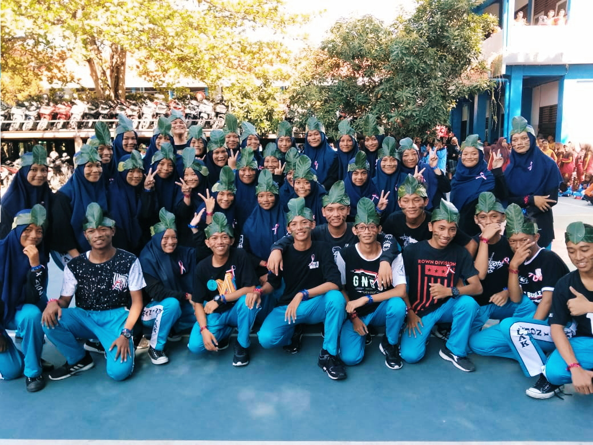
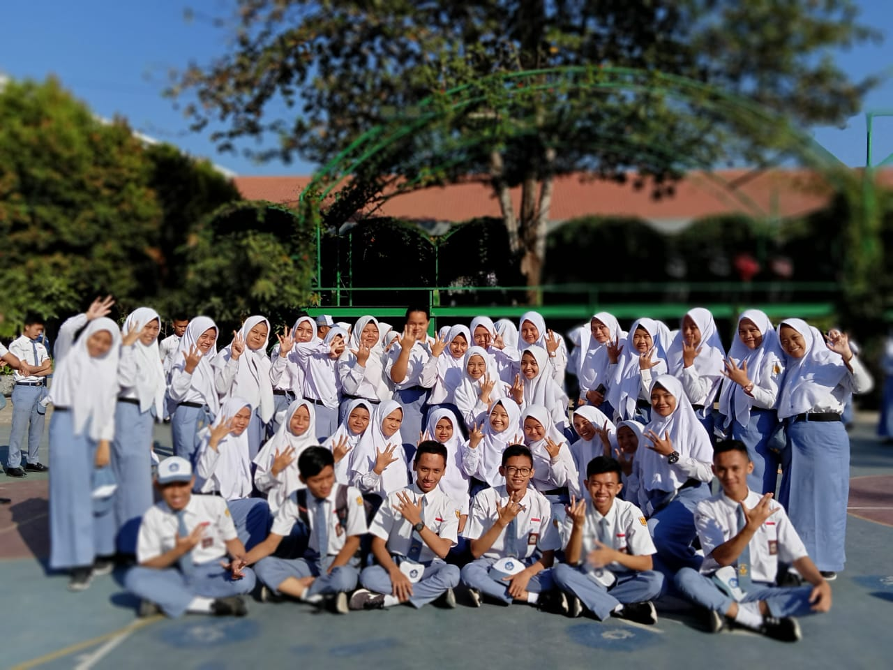
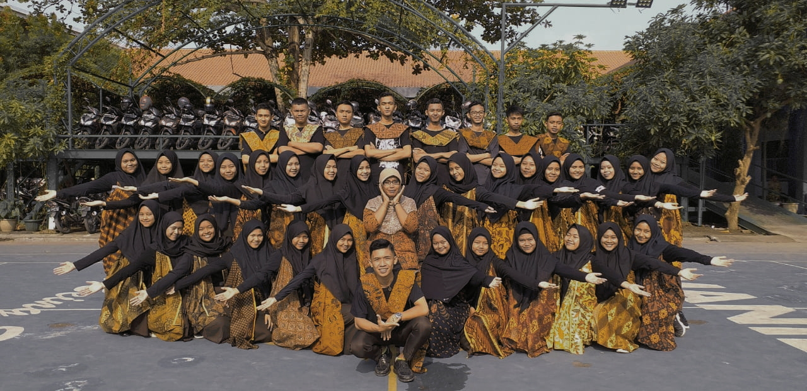
Hello,
Saya Aulia Putri Nur Rosyid
Mahasiswa Pendidikan Kimia '20
Universitas Sebelas Maret
Saya sangat termotivasi untuk mengembangkan kemampuan secara profesional. Saya yakin dengan kemampuan saya untuk memajukan kesejahteraan pendidikan di masa depan terutama di bidang Pendidikan Kimia
About Me
| Nama | : Aulia Putri Nur Rosyid |
| Jenis Kelamin | : Perempuan |
| Tempat, Tanggal lahir | : Boyolali,27 Juli 2003 |
| Agama | : Islam |
| Anak ke- | : 3 |
| Alamat | : Grinting Rt.02/Rw.03, Tegalgri, Nogosari Boyolali |
Education
Skills
Skill and Language
Setiap orang diberi keurangan dan kelebihan di bidang masing-masing, akan tetapi selalu bersyukur adalah kunci dari setiap kelebihan yang diperoleh
Skill
Personal Skill
Language
Personal Language
Riwayat organisasi
Riwayat Organisasi
SMP N 2 Colomadu
2015-2016
Ketua Departemen Kegamaan OSIS
2015-2016
Anggota Pecinta Alam ESPERO
Riwayat Organisasi
SMA N 1 Ngemplak
2019
Staff Bidang Tahfidz MKI SMANILA
2019-2020
Staff Bidang Mentor MQ SMANILA
Riwayat Organisasi
Universitas Sebelas Maret
2021 - Sekarang
Staf Departemen Sosial Masyarakat JN UKMI UNS
2021 - Sekarang
Staff Bidang Sosial Masyarakat SKI FKIP UNS
2021 - Sekarang
Staff Bidang Pembinaan
Award
Award
MI Muhammadiyah Grinting
Juara 2 lomba Murottal tingkat Kecamatan nogosari
Juara 2 Tadzabur Alam se-Hizbul Wathan se-Kecamatan Nogosari
Peserta Olimpiade MIPA dan ISMUBA se-Kabupaten Boyolali
Award
SMP N 2 Colomadu
Peserta British Manor English course
Peserta PEKAN (Pendidikan Konservasi dan Advokasi) MALIMPA UMS
Peserta BOSJAM (Boy Scout Jambore) se-Jawa Tengah di UMS
Award
SMA N 1 Ngemplak
Juara 1 Hijab Terbaik tahun 2018
Juara 2 Hijab Terbaik tahun 2019
Peserta Tahfidzul Qur'an Juz 30
Award
Universitas Sebelas Maret
Peserta Qur'an Youth Leader tahun 2020
Peserta Kimia Edu Fair X (KEF X) tahun 2020
Peserta Golden Step 8 SKI FKIP UNS tahun 2020
Juara Lomba Desain tema "Dakwah di Media Sosial" SKI FKIP UNS
Gallery
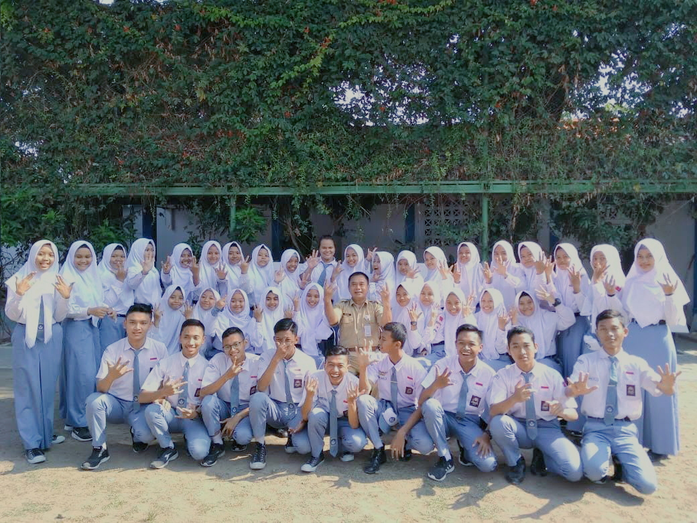
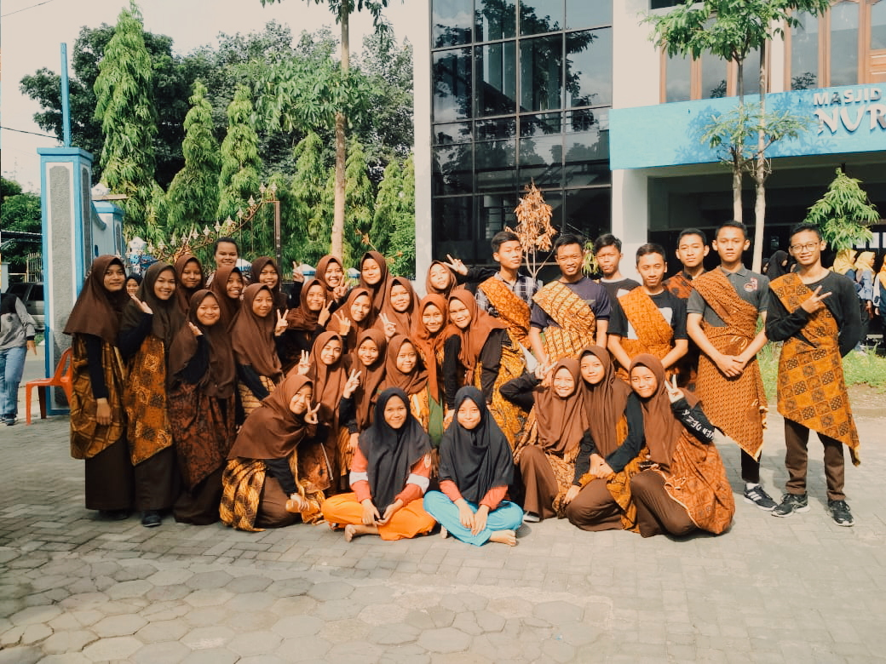
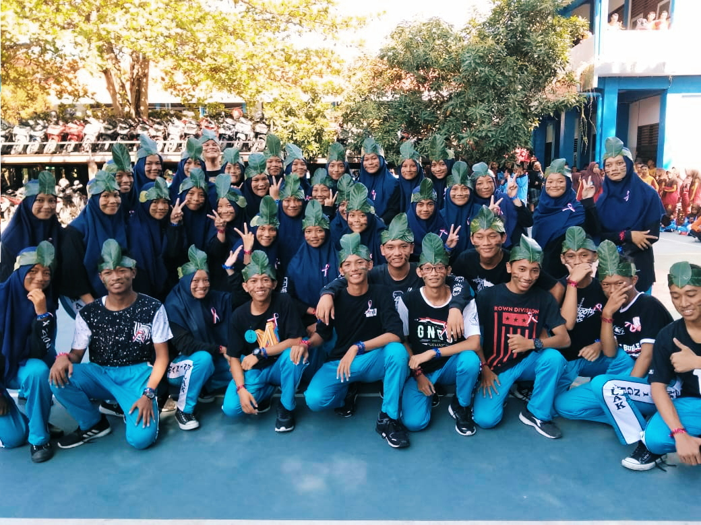
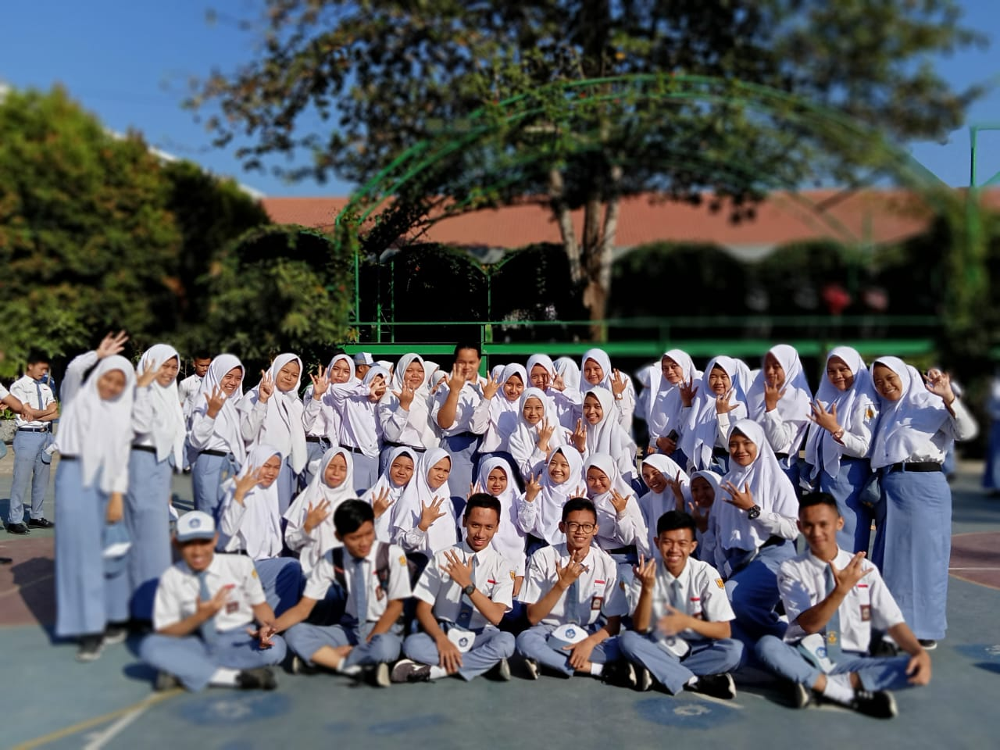
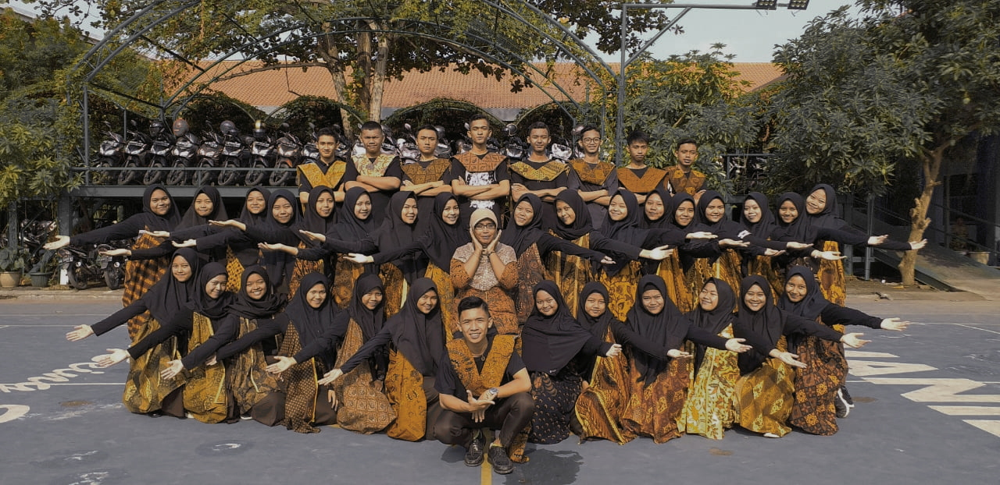
If You Have Any Project In Your Mind ?